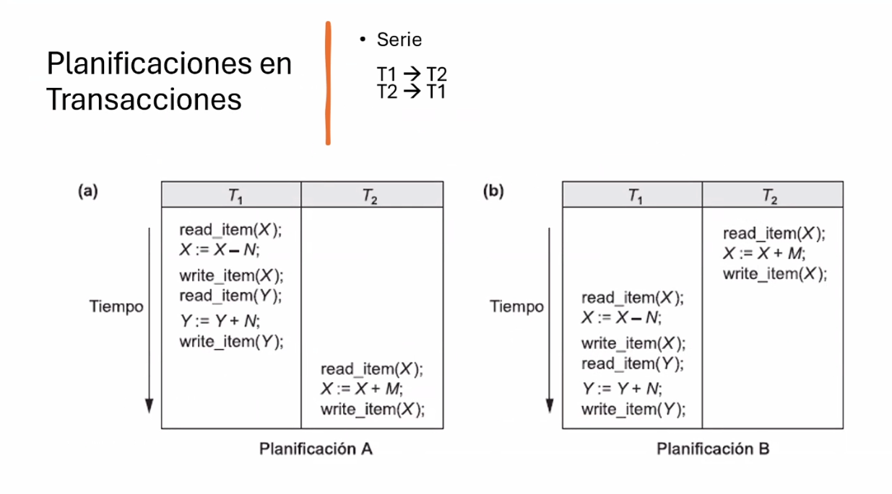
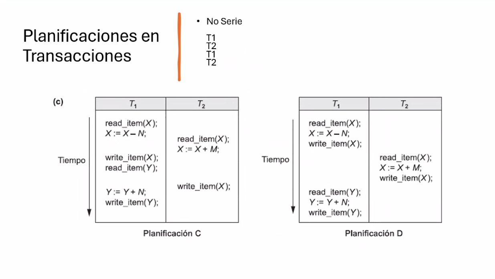

Lección 43 · Unidad 6 · Administración de transacciones · Opcional
Intercalar sin romper: serialización y bloqueos
El planificador intercala transacciones para ganar velocidad. La regla para que eso no rompa nada es la serialización, y se consigue con bloqueos o con versiones.
No está en lo que el docente nombró para el 2do parcial. Sirve para reconocer conceptos en un choice. Viene después de la 0042, que muestra los problemas que esto resuelve.
01Planificación en serie y no en serie
Una planificación es el orden en que se ejecutan las operaciones de varias transacciones. El slide muestra dos tipos:


02Serialización
"Es una propiedad en bases de datos que garantiza que, al ejecutar múltiples transacciones simultáneamente, el resultado final sea idéntico al que se obtendría si las transacciones se ejecutaran una por una en secuencia (en serie). Esto protege la integridad de los datos evitando errores por concurrencia."
Una planificación intercalada es serializable si equivale a alguna en serie. Para decidirlo se miran sólo las operaciones que chocan.
Operaciones en conflicto
Dos operaciones están en conflicto si se cumplen las tres condiciones:
- son de transacciones distintas;
- acceden al mismo dato;
- al menos una es WRITE.
| Par sobre el mismo X | ¿Conflicto? | Por qué |
|---|---|---|
READ(X) y READ(X) | No | Leer no cambia nada: el orden no importa |
READ(X) y WRITE(X) | Sí | La lectura ve un valor distinto según cuál va primero |
WRITE(X) y WRITE(X) | Sí | El valor que queda depende de cuál escribe último |
C y D, las dos planificaciones del slide
| Planificación C | Planificación D | |
|---|---|---|
| Qué pasa con X | T2 lee X antes de que T1 lo escriba, y escribe después | T2 lee X después de que T1 lo escribió |
| Resultado | Se pierde la resta de T1: es la pérdida de actualización | Igual al de la planificación A (T1 → T2) |
| ¿Serializable? | No | Sí |
En D, todos los conflictos sobre X van en el orden T1 antes que T2, y Y sólo lo toca T1. Por eso equivale a correr T1 entera y después T2. En C, T1 escribe X después de que T2 lo leyó, pero T2 escribe X después que T1: los conflictos van en los dos sentidos y no hay orden en serie que dé lo mismo.
03Cómo se consigue: bloqueos y MVCC
El slide nombra las dos técnicas principales:
Bloqueos (locks)
"Se asignan permisos exclusivos o compartidos a los datos. Un ejemplo es el bloqueo de dos fases (2PL), donde las transacciones adquieren y liberan bloqueos de forma ordenada antes de operar."
- Compartido (de lectura): varias transacciones pueden tenerlo a la vez sobre el mismo dato.
- Exclusivo (de escritura): sólo una lo tiene; las demás esperan hasta que lo libere.
El slide no lo dice, pero así funciona el 2PL: cada transacción tiene una fase de crecimiento, en la que sólo adquiere bloqueos, y una de decrecimiento, en la que sólo los libera. Una vez que libera el primero, ya no puede pedir ninguno más. Con esa regla, la planificación queda serializable.
Deadlock
El precio de bloquear: T1 tiene X y espera Y; T2 tiene Y y espera X. Ninguna puede seguir. Es un deadlock (bloqueo mortal). El slide de tipos de fallos lo pone bajo "Problemas de concurrencia", junto con la violación de la serialización (lección 0044). El motor lo resuelve abortando una de las dos.
MVCC, control de concurrencia multiversión
"En lugar de bloquear los datos, el sistema mantiene versiones históricas de los mismos, permitiendo que cada transacción lea una versión consistente sin interferir con las escrituras simultáneas."
Con bloqueos, el que quiere leer un dato que otro está escribiendo espera. Con MVCC, lee la versión anterior y sigue. El resumen del audio la llama "MBC": es un error de transcripción, la sigla es MVCC.
El planificador
El componente que decide el orden es el planificador de transacciones (scheduler). En clase se lo comparó con el planificador de procesos del sistema operativo: los dos reparten un recurso compartido entre muchos que lo piden. La diferencia es que el del DBMS además tiene que respetar la serialización. Cuando no puede garantizarla, bloquea.
04Práctica
¿Cuándo una planificación es serializable?
¿Cuál de estos pares de operaciones no está en conflicto?
En la planificación C del slide, T2 lee X antes de que T1 lo escriba y lo escribe después. ¿Qué pasa?
¿Qué técnica deja que una transacción lea sin esperar a la que está escribiendo el mismo dato?
T1 bloquea X y pide Y; T2 bloquea Y y pide X. ¿Qué es?
Capturas de la clase (raw/Clase Transacciones (capturas)/, 07 a 09 y 12 a 14).
Las planificaciones A–D, la definición de 2PL y la de deadlock son de Elmasri &
Navathe, caps. 17 y 18.